Inter Bold, « Dat » et « nime » identiques au mot-symbole du studio ; seule la lettre jaune change. Deux jaunes : jaune or (plus profond, tient sur blanc) et jaune vif (plus lumineux). Sous chaque logo : rappel en petit (16 px de haut). Favicons à leur taille réelle de 32 px.
| Code | Fond clair · jaune or | Fond clair · jaune vif | Fond sombre · jaune or | Fond sombre · jaune vif | Favicon 32 px · jaune or | Favicon 32 px · jaune vif |
|---|---|---|---|---|---|---|
| A1 « DatAnime » : un A capital normal en jaune, pleine hauteur de capitale. | 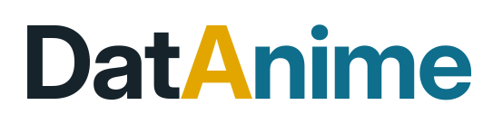 | 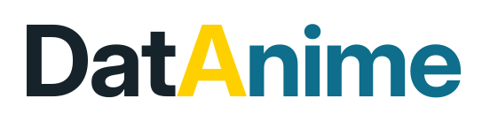 | 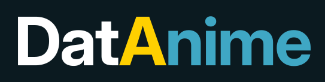 | |||
| C1 A capital droit en jaune ; l’œil est remplacé par un ▶ évidé de taille voisine, barre conservée. | 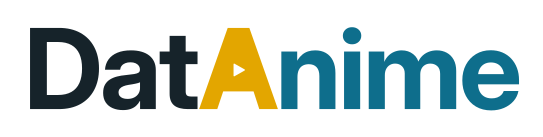 | 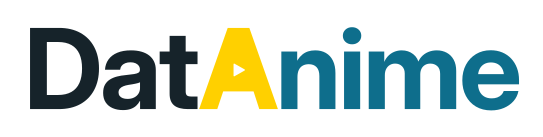 | 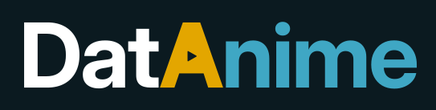 | 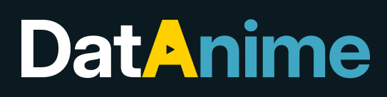 | ||
| C2 A droit ; ▶ évidé plus grand, lisible à 32 px : il mord sur la barre et affine un peu les jambages. | 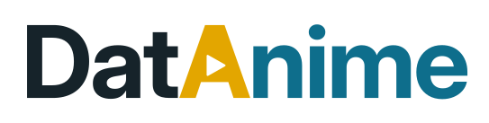 | 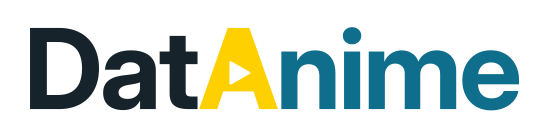 | 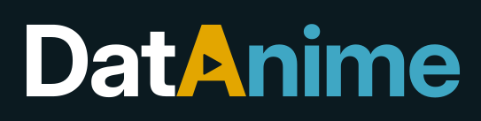 | 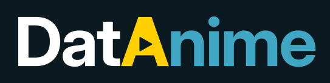 | ||
| C3 A droit sans barre : l’œil devient un ▶ franc au milieu du A, posé sur un pont plein. | 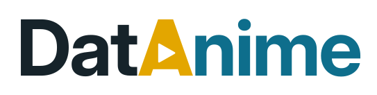 | 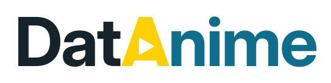 | 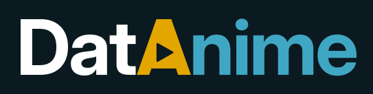 | 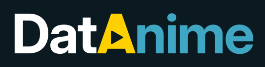 |